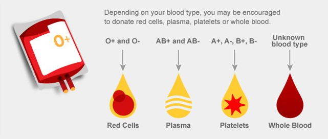

Leucothea
Blood Bank

Donate Blood and Save Someone's Future
Thank you for being a new or regular blood donor! As you may or may not know, there are a few different types of blood donation.
Whole Blood
This is what most individuals think of when they hear "blood donation." A pint of whole blood is drawn into a plastic bag, and is processed in the blood center laboratory and separated into components (red blood cells, plasma and sometimes into platelets and cryoprecipitate). After processing, the red blood cells can be stored for up to 42 days.
Apheresis
An apheresis blood donation is one where the blood goes through a special machine to separate it during the donation, so that only certain parts of blood are collected. This allows more of a single component, such as red blood cells or platelets, to be collected in one sitting.
Apheresis collection includes:
- Red Cells - these give your blood its red color and carry oxygen to your organs and tissues.
- Platelets - the very small colorless cell fragments in your blood whose main function is to stop bleeding.
- Plasma - this is the liquid portion of your blood that transports water and nutrients to your body's tissues.
Blood Donation Type:
Volunteer Donations
The standard or most common type of blood donation in which an individual donates one pint, which goes to any patient in need.
Directed Donations
A directed donation is blood that is donated for you by family members or friends who have the same blood type as you.
Autologous Donations
Blood drawn from an individual prior to elective, non-urgent surgery during which loss of a lot of blood is expected. The donated units are stored for up to 42 days and given back to the same individual when and if a need for transfusion arises. This is very useful for patients with rare blood types who can be very hard to support from the regular blood supply. Autologous donors must be healthy enough to donate safely, so this is rarely an option for seriously ill patients.
What blood donation type is best for me?
**If you do not know your blood type, a whole blood donation is recommended**